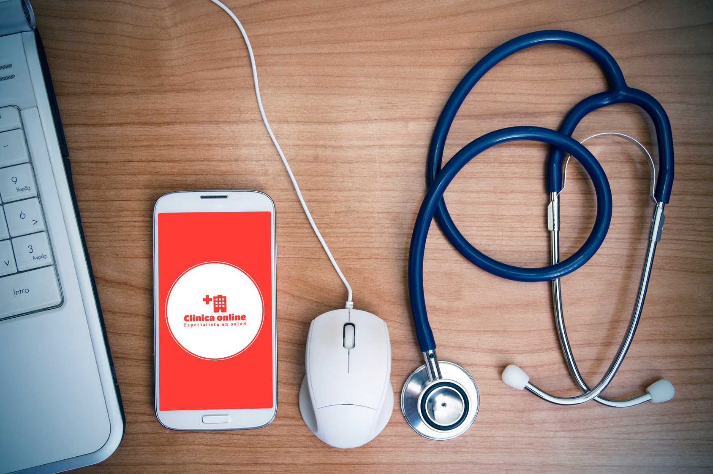

<section class="h-100 w-100" transition-style="in:custom:circle-swoop">
  <div
    class="row w-100 mt-3 p-2 mb-0 me-0 ms-0 justify-content-evenly align-items-end"
  >
    <div
      id="carouselExampleDark"
      class="mt-2 order-xxl-1 order-lg-1 order-md-2 order-sm-2 col-xxl-7 col-lg-6 col-md-9 col-sm-11 carousel carousel-dark slide"
    >
      <div class="carousel-indicators">
        <button
          type="button"
          data-bs-target="#carouselExampleDark"
          data-bs-slide-to="0"
          class="active"
          aria-current="true"
          aria-label="Slide 1"
        ></button>
        <button
          type="button"
          data-bs-target="#carouselExampleDark"
          data-bs-slide-to="1"
          aria-label="Slide 2"
        ></button>
        <button
          type="button"
          data-bs-target="#carouselExampleDark"
          data-bs-slide-to="2"
          aria-label="Slide 3"
        ></button>
      </div>
      <div class="carousel-inner">
        <div class="carousel-item active" data-bs-interval="10000">
          
          <div class="carousel-caption d-none d-md-block">
            <h5 class="fs-4 fw-bold">Los mejores profesionales</h5>
            <p class="text-shadow">
              Nuestra clínica cuenta con un equipo de profesionales altamente
              capacitados que se dedican a brindar servicios de atención médica
              en un entorno virtual. Con un total de 6 consultorios a tu
              disposición, dos laboratorios físicos ubicados en nuestras
              instalaciones y una sala de espera general, estamos aquí para
              atender tus necesidades de salud de manera eficiente y
              conveniente.
            </p>
          </div>
        </div>
        <div class="carousel-item" data-bs-interval="2000">
          
          <div class="carousel-caption d-none d-md-block">
            <h5 class="fs-4 fw-bold">Queremos cuidarte</h5>
            <p class="text-shadow">
              En Clínica Online, nos enorgullece proporcionar un servicio de
              atención médica de calidad, accesible desde la comodidad de tu
              hogar. Nuestro objetivo es brindarte una experiencia de consulta
              virtual confiable y efectiva, respaldada por profesionales
              altamente calificados.
            </p>
          </div>
        </div>
        <div class="carousel-item">
          
          <div class="carousel-caption d-none d-md-block">
            <h5 class="fs-4 fw-bold">Pensamos en vos</h5>
            <p class="text-shadow">
              Nuestros horarios de atención al público son de lunes a viernes,
              desde las 8:00 hasta las 19:00 horas, y los sábados de 8:00 a
              14:00 horas. Nos esforzamos por adaptarnos a tu apretada agenda y
              ofrecerte opciones de consulta que se ajusten a tus necesidades.
            </p>
          </div>
        </div>
      </div>
      <button
        class="carousel-control-prev"
        type="button"
        data-bs-target="#carouselExampleDark"
        data-bs-slide="prev"
      >
        <span class="carousel-control-prev-icon" aria-hidden="true"></span>
        <span class="visually-hidden">Previous</span>
      </button>
      <button
        class="carousel-control-next"
        type="button"
        data-bs-target="#carouselExampleDark"
        data-bs-slide="next"
      >
        <span class="carousel-control-next-icon" aria-hidden="true"></span>
        <span class="visually-hidden">Next</span>
      </button>
    </div>

    <div
      class="order-xxl-2 order-lg-2 order-md-1 order-sm-1 col-xxl-5 col-lg-6 col-md-9 col-sm-11 rounded m-0 align-self-center"
    >
      <div class="row h-100 mt-4 justify-content-center align-items-start">
        <h1
          class="fs-1 fw-bold text-center animate__animated animate__bounceInLeft"
        >
          Bienvenido/a Clínica Online
        </h1>
        <div class="shadow-lg bg-body-tertiary rounded p-3">
          <p>
            En Clinica Online, contamos con profesionales especializados en
            diversas áreas médicas. Cada uno de ellos ocupa los consultorios
            según su disponibilidad y recibe a los pacientes con cita previa
            para consultas o tratamientos. Nuestro sistema de solicitud de
            turnos a través de la web te permite seleccionar al profesional o la
            especialidad deseada, brindándote flexibilidad y comodidad al
            programar tu consulta.
          </p>
          <p>
            La duración mínima de un turno es de 30 minutos, sin embargo,
            nuestros profesionales tienen la libertad de ajustar la duración
            según las necesidades específicas de su especialidad. Además, muchos
            de nuestros especialistas tienen habilidades y conocimientos en más
            de una área médica, lo que nos permite ofrecerte una atención
            integral y multidisciplinaria.
          </p>
          <p>
            ¡Te invitamos a explorar nuestro sitio web y reservar tu consulta
            hoy mismo! Estamos aquí para ayudarte a mantener y mejorar tu salud
            de manera segura y conveniente.
          </p>
        </div>
      </div>
    </div>
  </div>
</section>
